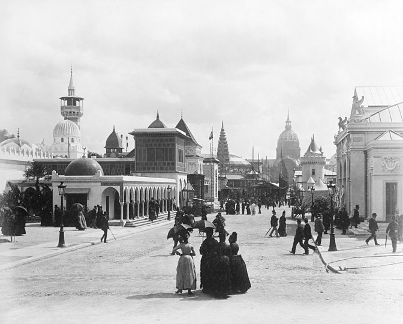
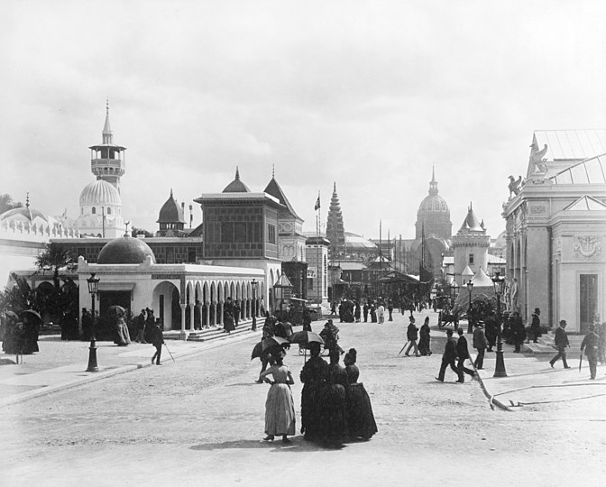

La Torre Eiffel
presentadoras: Teo y Laura
Descripción del lugar
La historia de la Torre Eiffel
un símbolo icónico de la ciudad de París
y su historia es realmente fascinante.
Autors de la esta obra
Mayo de 1884, fue diseñado por Maurice Koechlin y Émile Nouguier.

Gustave Eiffel, el jefe(boss) de estos dos ingenieros: compró la idea y la publicitó(advertise).
Razón para su construcción
✨la exposición de 1889 en París ✨
100 aniversario de la revolución francesa
- 1789 la toma de la Bastilla

mayo de 1886: la torre Eiffel gana el concurso(competition)
se convirtió(it became) en el principal símbolo (main symbol) de la exposición,
sirvió como arco de entrada (entrance arch) a la exposición.

 

la construcción
enero de 1887, se recibió 1.5 millones francos por el gobierno,
pero el costo estimado fue de 6.5 millones.
Gustave tuvo que conseguir el resto del dinero por su cuenta.

julio de 1887: se inició la construcción de la carpintería metálica(metal carpentry/metalwork).
diciembre de 1887: Se construyeron las patas(legs).

marzo de 1888: Se finalizó la primera etapa(stage).

mayo de 1888: se inició la construcción de la segunda etapa.
agosto 1888: Se finalizó la segunda etapa.

26 de diciembre de 1888: Se construyó la etapa superiora(upper stage).

15 de marzo de 1889: Construcción de la cúpula(dome/cupola).
enero de 1887--marzo de 1889
2 años, 2 meses y 5 días
La inauguración fue en mayo de 1889
patrimonio mundial
Cuando estuvo inscrita en parte del patrimonio mundial de la UNESCO en 1991
ya había sido declarada monumento protegido en 1964
Cambios y continuidades
30.05.2023


¡Gracias!